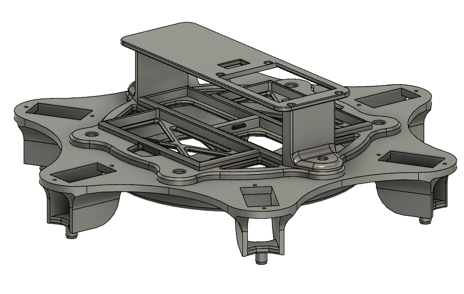

Classic Chocolate Chip Cookies

Ingredients
- 2 1/4 cups all-purpose flour
- 1 tsp baking soda
- 1 tsp salt
- 1 cup unsalted butter, room temperature
- 3/4 cup granulated sugar
- 3/4 cup brown sugar
- 2 large eggs
- 2 tsp vanilla extract
- 2 cups semisweet chocolate chips
Method
- Preheat oven to 375°F.
- In a medium bowl, whisk together flour, baking soda, and salt.
- In a large bowl, cream together butter, granulated sugar, and brown sugar until light and fluffy, about 2-3 minutes.
- Add eggs, one at a time, beating well after each addition. Stir in vanilla extract.
- Gradually mix in flour mixture until just combined.
- Fold in chocolate chips.
- Drop dough by rounded tablespoonfuls onto a baking sheet lined with parchment paper.
- Bake for 10-12 minutes or until golden brown.
- Cool on baking sheet for 2 minutes before transferring to wire rack to cool completely.